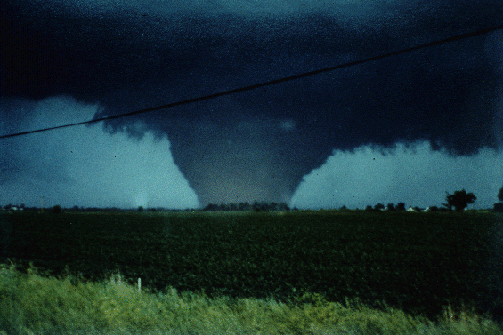

Here Are Some Helpful Tips For Forecasting Severe Weather

(Photo Courtesy of ISU Meteorology Program)
This Page Is Intended To Help High School
Students Forecast Severe Weather
Here Is Some Information You Should Know Before Forecasting
- The surface map shows conditions at the
surface.
- The 850 mb map shows conditions at 5,000 feet above sea level.
- The 500 mb map shows conditions at 18,000 feet above sea
level.
- An upper air sounding is data taken from a weather balloon sent up
twice each day.

Steps
1. Look at Surface Map For:
2. Look at 850 mb Map For:
3. Look at 500 mb Map With Vorticity For:
4. Look at Upper Air Soundings For:
5. Complete Your Forecast
Here Are Some Helpful Weather Product
Links